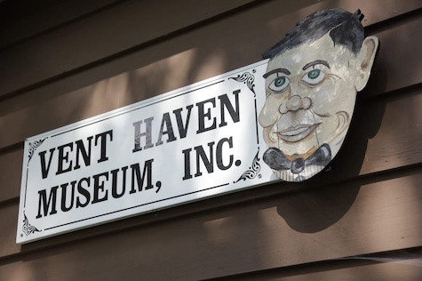

Vent Haven Museum is all about dummies – puppets, not people with questionable judgment. This museum houses 1,012 ventriloquial figures, more commonly referred to as dummies, from the 19th through 21st centuries. It is also home to over 10,000 pictures of ventriloquists, a few who are celebrities, and their puppets. Johnny Carson, Don Knotts, and Don Messick are some of the more famous ventriloquists featured.
Vent Haven Museum ("vent" is lingo for "ventriloquist") just off the Interstate 75 Fort Mitchell exit in Northern Kentucky, is the world's only museum of ventriloquial figures and memorabilia. If it's ventriloquism-related, you'll find it at Vent Haven If you're a ventriliquist this may be the cultural center of your world!

Vent Haven has three buildings; all three have dummies and pictures of ventriloquists with their puppets. The first building in the tour has an eclectic collection of dummies. The second building has puppets organized in chronological order. The third building features United States presidents, and puppets of Mickey Mouse, Raggedy Ann, and Bozo the Clown, among others. It also has a small gift shop that sells sell t-shirts, caps, sock puppets and books.
The museum houses figures from many ventriloquists, but it began with a collection by William Shakespeare Berger. Berger, who was president of Cambridge Tile Co. in Cincinnati, began collecting ventriloquial figures after purchasing his first on a trip to New York.
Visit Us
The museum does not have regular open hours. Tours of Vent Haven are by appointment only May 1 through September 30. To schedule a tour, call (859) 341-0461 and ask to speak with the curator, Lisa Sweasy. If you like, you can email Lisa and request a tour time.
Groups of less than 15 need to request tours at least three days in advance. Larger groups need to allow two weeks.
The admission donation is $10 per person. The tour is guided and lasts between 45 and 90 minutes, depending on the visitors' interest and/or questions.